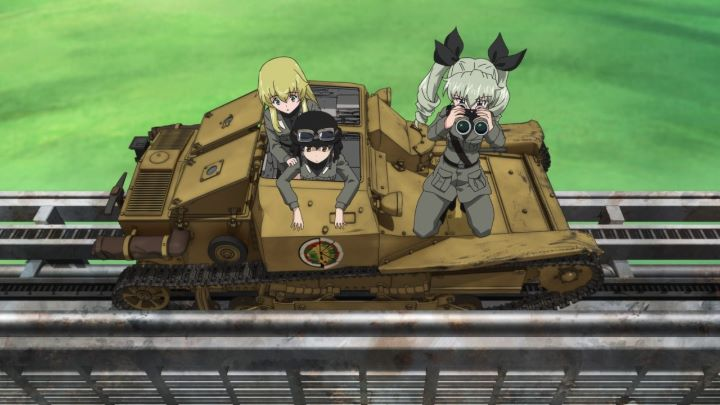

It's not always a good thing for an anime to be popular. "Girls und Panzer" was a perfectly fine series, able to complete what it set out to do within a 12-episode season. It's characters were sweet, but not memorable or compelling enough to warrant even big fans from wanting more. And yet, we got a LOT more: a bunch of OVA episodes, and a 2-hour theatrical film, simply titled "Girls und Panzer - Der Film." A few years later, it continues to receive even more theatrical adaptations, but that's another story. This review is just for "Der Film." In the first season, the girls of Ooarai High School compete in the sport of "Tankery" to stop their school from closing down. They succeeded. To justify the movie, the writers simply decided to retcon the decision, explaining that the adults lied, and shutting down the school anyway. After a roaring memorial match in the first 30 minutes of the movie, the girls come back to the school to find the gates locked, and spend the next 30 minutes preparing to go back home until each of the students are assigned to new locations. After that teary segment, a new solution if offered seemingly out of the blue by the school's education board: "well, I guess if the team can win a University-level match, we would keep the school open." After signing a contract making the promise binding, the girls spend the last hour of the movie in a massive tank match against one selected University team: since the University's forces are larger, every opponent Ooarai High faced in the past agrees to join as temporary allies to give a fighting chance. I remember when the film was first released in North America (it received a limited theatrical run by Sentai Filmworks). Fans seemed disappointed, claiming "it completely missed the point about what made "Girls und Panzer" special." To some extent, I understand. The original series was more calming, about close friendship, and the stakes never felt serious. In the movie, the girls see the school closed, making the threat feel all the more real. Most of the cute asides the series was known for aren't quite as present: this is a serious movie where action takes center stage. I fully expected to be tired out by the premise of "cute girls driving military-grade tanks" by now, so my hopes weren't high.You can imagine my surprise when I finally got around to watching the movie, enjoying every minute of it. While the tank battles were sort-of fun in the original series, they were also a bit dull in comparison to the comedy. The original series was funny because it played itself straight when explaining that "Tankery" is an acceptable sport for teenagers. In "Der Film," the tank battles are taken to a new level. There's only really two matches, but each are pretty big setpieces, with the second taking place in a large abandoned amusement park, making clever use of the environment. The animation is a step up from the series, not only making the girls more expressive, but also the tanks themselves. I could feel the fear and determination in the tanks' movements, as if they themselves were real characters. It's all worthy of a feature-length film. And despite being 2-hours long, the film seemed to zip by, never boring me.I guess one thing that bugged me was the character designs: the University team and the high school team look the same age: 12. But that comes with the territory of this type of anime art-style. The music is still good, although I was annoyed to hear loud tank sound effects and whisper-quiet acting juxtaposed to each other. It's not unusual for films with surround sound mixing, but this film in particular is difficult to watch with a cheap television and stereo speakers in a tiny apartment. The voice acting is a bit more confident, taking better advantage of the "international" schools. And the banter between them in the middle of a tank battle is fun to listen to in itself. I guess your enjoyment of the movie will depend on whether or not you watched "Girls und Panzer" for the action. If you want calming days in the town, or cute girls making jokes, you won't find as much of it here. If you want realistic tank animations, the maneuvers utilized here might be a bit too unrealistic. And if you haven't yet seen the original series, most of the enjoyment of watching these characters will be lost on you. Otherwise, "Der Film" does things right, being more exciting than the original, and with higher production values to boot.
- "Ani" More reviews can be found at : https://2danicritic.github.io/ Previous review: review_Girls_und_Panzer Next review: review_Girls_und_Panzer_-_OVA